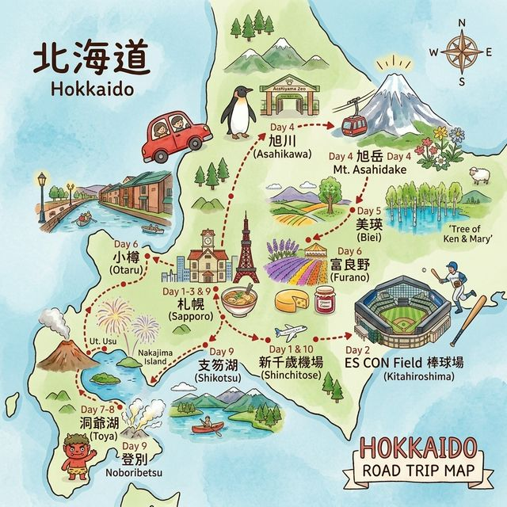

🎨 卡通手繪風格路線圖（中日雙語標記）｜逆時針路線・自駕自助手冊專屬
| 日期 | 地點 | 晚數 | 建議旅館 |
|---|---|---|---|
| 7/31・8/1・8/2 | 札幌 | 3晚 | JR Inn / Cross Hotel / Richmond |
| 8/3 | 旭川 | 1晚 | JR Inn 旭川 / OMO7 旭川 / Y's Hotel 旭川駅前 |
| 8/4 | 美瑛 | 1晚 | Biei Potato Village / 白金温泉旅館 / 丘のくら |
| 8/5 | 小樽 | 1晚 | ドーミーイン小樽 / Vessel Hotel Campana Otaru |
| 8/6・8/7 | 洞爺湖溫泉 | 2晚 | 湖畔亭 / 望羊蹄 / Toya Manseikaku |
| 8/8 | 札幌 | 1晚 | Art Hotel / Quintessa Hotel / JR Inn 札幌 |
| 類型 | 設施 | 日期 | 費用參考 |
|---|---|---|---|
| 🐻 動物園 | 圓山動物園（札幌） | 8/2 | ¥600/大人・¥300/小孩 |
| 🦁 動物園 | 旭山動物園（旭川） | 8/3 | 入園票依季節，園內食堂另計 |
| 🐬 水族館 | 小樽水族館 | 8/6 | ¥1,800/大人・¥700/小學生 |
| 🏔️ 國家公園 | 大雪山國家公園・旭岳纜車 + 姿見散策 | 8/4 | 纜車來回 ¥3,500/大人・¥1,750/小孩 |
| 🐑 牧場體驗 | ファームズ千代田 ふれあい牧場（美瑛） | 8/4 | 免費入場 |
| 🌃 夜景 | 小樽天狗山纜車（北海道三大夜景） | 8/5 | 來回 ¥1,600/大人・¥800/小孩 |
| 👹 火山地形 | 登別地獄谷・大湯沼 | 8/8 | 免門票，停車¥500 |
| 🏔️ 國家公園 | 支笏洞爺國家公園（洞爺湖・支笏湖） | 8/6–8/8 | 水中遊覧船 ¥1,500/大人 |
| ⚾ 球場 | ES CON Field（已預訂） | 8/1 | — |
旭山動物園
旺季 8 月每天開放到 17:15，Day 4 中午入園約 3 小時充足
旭岳纜車
夏季 06:30 起運行（週末 06:00），來回 ¥3,500/大人 ¥1,750/小孩；雨天大霧可能停開，需備案
旭岳姿見散策
山頂氣溫 10-15°C，務必帶薄外套防風衣；步道碎石路面，穿運動鞋；全程約 1 小時，8 歲可走
青い池
光線最美：上午 10:00 前 / 夕陽前後；此版本約 12:15 抵達，午後光線亦佳
小樽天狗山纜車
夏季營業至 21:00（末班上山 20:48），來回 ¥1,600/大人 ¥800/小孩
Farm Tomita
8 月薰衣草或已過，花田仍美，詳情可出發前再查當年花況
洞爺湖煙火
每晚 20:45 固定施放（4 月下旬到 10 月下旬），住湖畔旅館可直接欣賞
登別地獄谷
免門票、停車¥500；地獄谷→大湯沼有觀光步道相連；硫磺味重備口罩；大湯沼川天然足湯記得帶毛巾
租車
帶台灣駕照 + 日文翻譯本（非國際駕照，須在台辦理），或國際駕照
日本 eSIM
出發前買好（推薦 IIJmio 或 HISモバイル），全程需 Google Maps 導航
| 項目 | 估算（台幣） |
|---|---|
| 住宿（10晚，含溫泉旅館） | NT$70,000–90,000 |
| 租車 6天（含燃油・高速） | NT$15,000–18,000 |
| 飲食（10天） | NT$30,000–40,000 |
| 門票（動物園・水族館・纜車等） | NT$10,000–13,000 |
| JR・巴士交通 | NT$5,000–7,000 |
| 購物・伴手禮 | 依個人預算 |